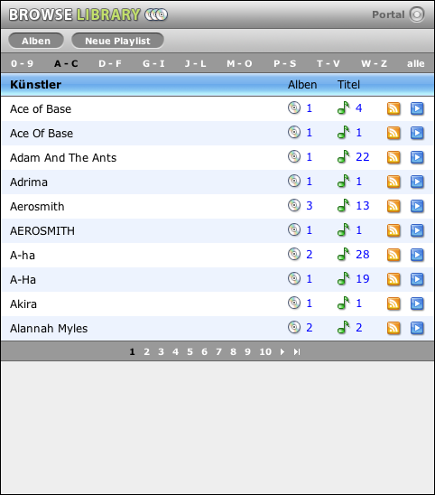
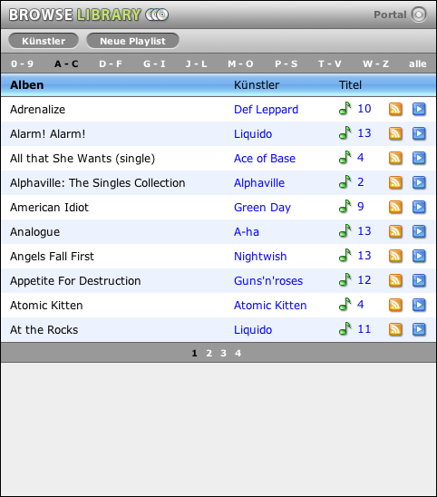
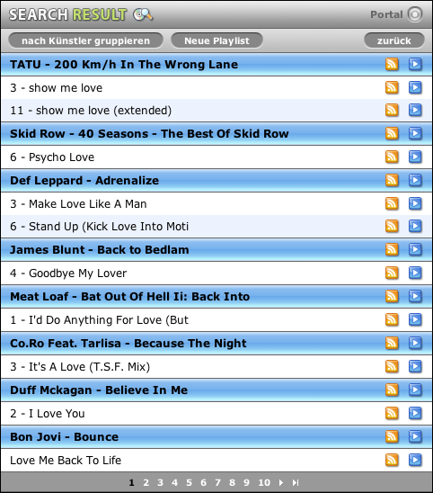

Bibliothek durchsuchen
Die mächstige Funktion von MyTunesRSS ist das Durchsuchen der Bibliothek. Vom Portal aus gelangen Sie auf die Seite aller Künstler. Diese sind alphabetisch geordnet und je nach Einstellung der Anzahl Einträge pro Seite auf mehrere Seiten verteilt. Über der Liste befinden sich Gruppen von Buchstaben. In der Gruppe "A - C" beispielsweise finden Sie alle Künstler die mit den Buchstaben A, B und C beginnen.
Hinter jedem Künstler werden die Anzahl der Alben auf denen dieser Künstler in Ihrer Bibliothek vorkommt und die Anzahl seiner Titel angezeigt. Mit einem Klick auf die Anzahl der Alben springen Sie auf die Listen der Alben des Künstlers. Mit einem Klick auf die Anzahl der Titel in die Titelliste.
Am Ende der Zeile sind die Icons um eine M3U Playliste oder einen RSS Feed für alle Titel des Künstlers zu erzeugen.
Über den Künstlern sind Links zum Anzeigen der Liste der Alben und zum Erstellen einer neuen Playliste. Diese Funktion wird in einem späteren Kapitel beschrieben.
Die Liste der Alben ist ähnlich aufgebaut. Sie zeigt alle Alben in alphabetischer Reihenfolge. Hinter jedem Album steht der Künster oder "verschiedene" bei Alben mit mehreren Künstlern. Auch die Anzahl der Titel auf dem Album und die Links zum Erzeugen einer M3U Playlist oder eines RSS Feeds sind pro Album vorhanden. Mit einem Klick auf die Anzahl der Titel gelangen Sie auf die Titelliste, bei einem Klick auf den Künstler (für "verschiedene" nicht möglich) werden alle Alben des Künstlers gezeigt. Wenn Sie eine gefilterte Liste von Alben sehen (alle Alben eines Künstlers) und die Liste mehr als ein Album enthält, ist am Ende der Liste ein zusätzlicher Eintrag "Alle Titel der obigen Alben" vorhanden.
Die Liste der Titel erscheint nach der Suche vom Portal aus oder nach einem Klick auf die Titelliste in einer der anderen Ansichten. Hier werden die entsprechenden Titel nach Album oder Künstler sortiert und gruppiert angezeigt. Sie können die Gruppierung wählen und von jedem Titel oder jeder Gruppe eine M3U Playlist bzw. einen RSS Feed erzeugen. Sowohl in den Gruppenüberschriften als auch in den einzelnen Titeln können Sie mit einem Klick auf den Künstler alle Alben des entsprechenden Künstlers anzeigen.
